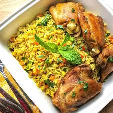

Fried Rice Recipes

Fried rice is a dish of cooked rice that has been stir-fried in a work or a frying pan and is usually mixed with other ingredient such as eggs, vegetable, eaten by itself or as an accompaniment to another dish.
ingredient
- sesame oil
- Onion
- peas & carrots
- Beaten eggs
- Rice
- Maggi
- Meat
- Time
- Green beans
Steps for making fried Rice
- preheat a large skillet or work to medium heat. pour sesame oil in the bottom....
- side the onion ,peas and carrots to the side , and pour the beaten eggs onto the other side . using spatula, scramble the eggs...
- Add the rice to the veggie and egg mixturepour the soy sause on top.